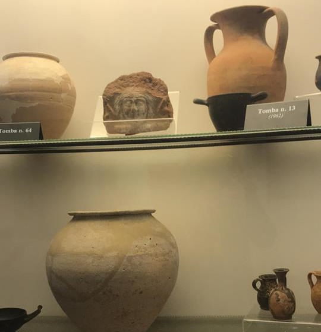

Home
Le federazioni osche
Localizzazione musei e siti
Chi siamo
Dove trovarci
Museo Archeologico Provinciale dell' Agro Nocerino
Nel
Museo Archeologico provinciale dell’Agro Nocerino (Nocera Inferiore)
, sono conservate testimonianze dell’area urbana e delle necropoli dell’antica Nuceria.
